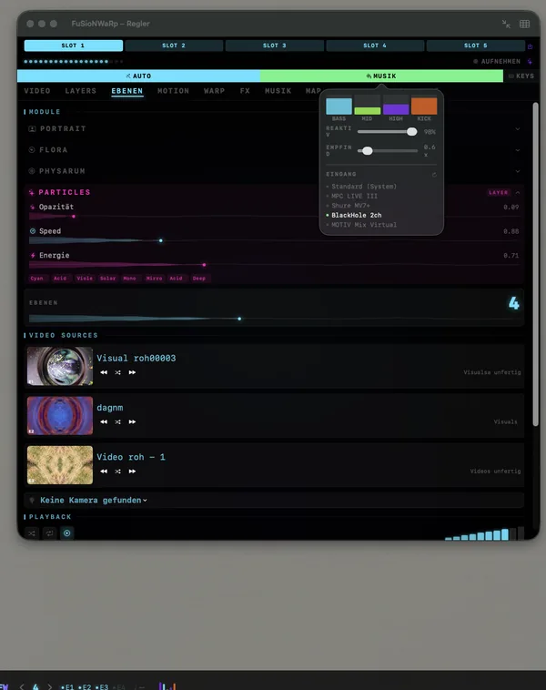
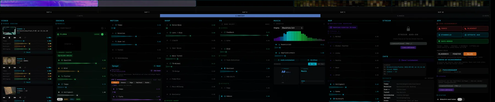
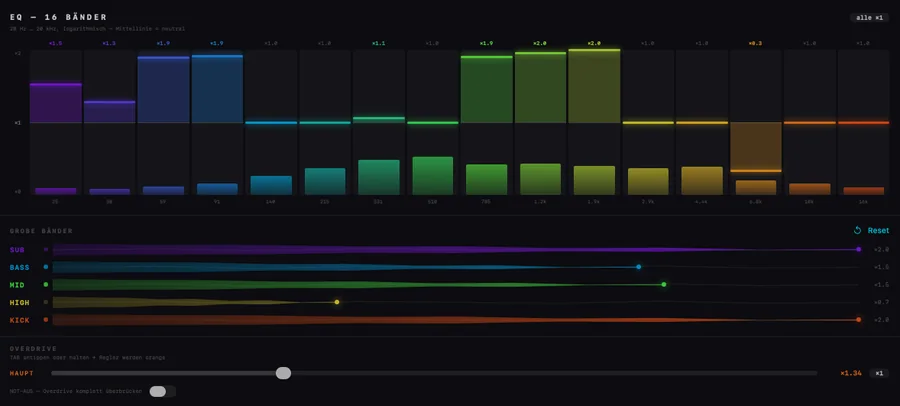

Ob Wohnzimmer-TV, Club-LED-Wall oder Festival-Stage — Visuals und Musik laufen aneinander vorbei. FuSioNWaRp bringt beides zusammen.
Nicht jeder zockt. Nicht jeder streamt. Aber Musik läuft immer.
46
Bild-Effekte
27
Körper-Bewegungen
4
Ebenen, frei mischbar
10
Slots für ganze Looks
4
Betriebsarten
Die Technologie
Vier Ebenen. Und alles darf eine sein.
Auf jeder der vier Ebenen liegt eine Quelle — ein Video, die Kamera, ein Bildschirmausschnitt, eine Fläche, ein Stream oder das Bild einer anderen App. Darüber laufen die Effektgruppen. Jede Ebene hat ihre eigene Deckkraft, ihren eigenen Effekt-Anteil und einen von sechzehn Mischmodi — von Multiplizieren über Differenz bis Strahlend. Ebene 1 ist bewusst der Untergrund.

Alles auf einer Fläche
Die fünf Slots oben, darunter die Ebenen mit ihren Quellen, die Effektgruppen und die
Generatoren — kein verschachteltes Menü, nichts, wonach man während eines Sets suchen muss.
Was du siehst, ist der komplette Zustand des Bildes.

Fenster-Modus · jede Rubrik ein eigenes Fenster, hier alle gleichzeitig
Effektkatalog
46 Effekte. In sechs Gruppen.
Jeder einzelne Regler lässt sich per Rechtsklick festlegen: von Hand, von der Automatik, von einem Frequenzband oder von einem der drei Modulatoren geführt. Und jeder ist per MIDI erreichbar.
↻
Motion
Tempo · Rotation · Zoom ∞
Tunnel · Kaleidoskop · Spiegel
Atmen · Schütteln · Nicken
Drift · Pump auf dem Kick
≋
Warp
Noise-Warp · Lens · Liquid
Heat Waves · Wave Tunnel
TD-Wirbel · TD-Bulge · Pump-Riss
Boxinator · Maus-Wölbung
⬡
Space-Warp
Zoom-Rush · 3D-Tunnel
Parallax-3D — Helligkeit wird Tiefe
Negativzoom · Dematerial
Räumliche Tiefe statt Flächenverzerrung
◉
Signal
Feedback bis 0,99 — das Bild fließt in sich zurück
Echo — Geister früherer Bilder
Glow — Leuchthof um die hellen Stellen
Hier entsteht der eigentliche Look
◑
Farbe
Farb-Schichten durchs ganze Spektrum
Kontrast 0,5 – 2,0
RGB-Shift — Chromatische Aberration
S/W · Film-Grade mit Vignette
✦
Effekte
Edge · Emboss · Schach-Puls
VHS · Invert-Blitz · Thresh · Pixel
TD-Streifen · Neon-Edge · Prisma
Spectrum-Break · Slice-Glitch
Strobe · fünf animierte Masken
Fast jeder Effekt ist gedeckelt, damit das Bild nicht reißt. Der Overdrive hebt den Deckel — pro Effekt, oder über alles mit einem Faktor von 0,2× bis 4×. Die TAB-Taste rastet ein oder wirkt nur solange gedrückt; ein Not-Aus überbrückt alles in einem Zug.
Eigene Generatoren
Vier Bildmaschinen, die selbst malen.
Sie brauchen kein Ausgangsmaterial — sie erzeugen ihr Bild selbst, in einem eigenen Fenster, und legen sich anschließend als Ebene in den Stapel. Deckkraft und Platz im Stapel bestimmst du.
🌿
Flora
Wächst über deine Bilder
Windstärke & Blattflattern
Schwing-Geschwindigkeit
Automatischer Bildwechsel
🦠
Physarum
Schleimpilz-Simulation
Bis zu 500 000 Agenten mit Fühlern
Ablagern, Verfallen, Spuren folgen
Symmetrie-Modi & Versatz
✧
Particles
Partikelsystem auf der GPU
Reagiert auf den Beat
Eigenes Fenster, eigener Regler-Satz
Als Ebene oder Overlay
◉
Portrait
Gesichts-Landmarks über Vision
Live Face-Warp zur Musik
Eigene MIDI-Steuerung
Frei im Ebenen-Stapel
Vier Betriebsarten
Wer führt — du oder die Musik?
MIDI
Die Regler stehen, wo du sie hinstellst. Volle manuelle Kontrolle, nichts bewegt sich von allein. Für DJ-Sets, Installationen, Studio.
AUTO
Das Material wechselt selbstständig weiter, die Effekte bleiben unter deiner Hand. Für lange Abende ohne ständiges Eingreifen.
MUSIK
Jetzt steuern die Regler nur noch, wie stark die Musik durchschlägt — 50 % heißt halbe Reaktion. Für maximale Synchronität.
AMBIENT
Ruhige Bildfolge, die stundenlang von allein weiterzieht — ohne Strobe, ohne Sprünge. Zwölf feste Szenen von Nebel bis Spektrum, oder frei gewürfelt. Für Installation, Ausstellung, Wohnzimmer.
Darunter liegt die feinere Ebene: Jeder einzelne Regler bekommt per Rechtsklick seine eigene Quelle — Hand, Automatik, ein Frequenzband oder einer von drei Modulatoren mit Kurvenform, Tiefe und Startversatz. Deren Rate läuft wahlweise in Zyklen pro Sekunde oder in Vierteln im Takt der erkannten Musik — und auch in völliger Stille weiter.
Zehn Slots halten je einen kompletten Stand aller Regler fest — mit Vorschaubild und eigenem Namen. Die Tasten 1–5 und die MIDI-Buttons rufen sie ab.
Audio-Reaktivität
Die Engine versteht die Energie.
Bass & Kick
Transient-Detection erkennt jeden Kick. Zoom-Puls, Tunnel-Sog, Pump-Riss — das Bild atmet mit dem Beat.
16-Band-Analyse
Das gesamte Spektrum wird in 16 Bänder zerlegt. Jedes Band steuert eigene Parameter — präzise, in Echtzeit.
BPM & Beat-Phase
Automatische Tempo-Erkennung samt Verlässlichkeitswert. Effekte wechseln im Takt, Übergänge passieren exakt auf der Eins.
Tonart
Zwölf Chroma-Filter über vier Oktaven bestimmen die Tonart live mit — nicht nur wie laut es ist, sondern was gespielt wird.
Musikalisches Vorwissen
Tabellen aus 912 annotierten Songs liefern Phrasen-Uhr und Songform und korrigieren Tonart und Tempo. Die Engine weiß, wo im Stück sie steht.
Genre-Erkennung
Bleibt der Musikstil drei Sekunden stabil, schlägt die Engine einen passenden Look vor. Ein Klick übernimmt ihn — die Entscheidung bleibt bei dir.

16 Bänder · fünf grobe Bänder · Overdrive mit Not-Aus
Jetzt eingebaut
Der Node-Editor. Direkt in FusionWarp.
Ein Knopf in der Leiste öffnet ihn — nichts einrichten, nichts verbinden. Wer tiefer will, verkabelt dort Video, FX, Audio und Ausgang frei als Graph; sein Bild kommt sofort als ganz normale Ebene in FusionWarp zurück.
Der FusionWarp Orb: kein Menü, keine Regler mit Zahlen. Drei Rillen laufen als Bahnen am Bildschirmrand entlang, sechs Pads füllen die Mitte — und ein zweites Modul lässt Effektpunkte von frei gesetzten Rotoren überstreichen. Er findet den Mac von allein per Bonjour und schickt OSC übers WLAN, ganz ohne Kabel. Ist keiner da, rechnet das iPhone die Engine selbst.
Die Prüfung läuft vollständig offline — kein Server, kein Konto. Der Schlüssel aus der Kauf-Mail wird eingefügt, kryptografisch geprüft, fertig. In der App steckt nur der öffentliche Prüfschlüssel; erzeugen kann damit niemand etwas. Keine Aktivierungsgrenze, keine Verbindung, die eines Tages abgeschaltet wird.
macOS · Apple Silicon · kein Abo geplant · Preise stehen noch nicht fest